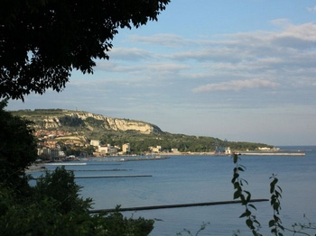

Реабилитационный центр “Свобода”
В настоящее время в центре «Свобода» созданы все условия для организации эффективного лечения наркомании, алкоголизма и других видов зависимостей.
Лечение, реабилитация и полное восстановление от наркотической и алкогольной зависимости в центре «Свобода» построено на основе тщательно проработанной системы. Здесь высококвалифицированные психотерапевты и консультанты помогают зависимым выйти из критического состояния, найти себя и начать трезвую жизнь.
Главным плюсом реабилитации наркозависимости за рубежом является то, что находясь вдали от привычных мест и прежней жизни, пациент прерывает контакт с прежним кругом общения, ему легче создать новую мотивацию и интересы, и при помощи наших консультантов заново сформировать социальные и психологические навыки.
Центр «Свобода» организует реабилитационные курсы именно в Болгарии, поскольку особое значение в процессе реабилитации играет природа, экология и климат. Особенностью реабилитации в Болгарии можно считать то, что курортное лечение является неотъемлемой частью программ преодоления зависимости. В лечебный план нашего центра также включены экскурсии по уникальным местам, посещение исторических и духовных центров.
Мы подходим к проблемам лечения наркомании и алкоголизма комплексно.
01.05.2015
Профессиональная подготовка специалистов
В нашем Центре предлагается Программа профессионального обучения для специалистов-консультантов, наставников, практикующих в сфере реабилитации наркозависимых и алкоголиков.
Наша Программа обучения консультантов предполагает строгий отбор кандидатов и разработана на основе успешных мировых практик и опыта ведущих специалистов из области лечения наркоманов и алкоголиков. Подробнее
01.05.2015
Профессиональная подготовка специалистов
В нашем Центре предлагается Программа профессионального обучения для специалистов-консультантов, наставников, практикующих в сфере реабилитации наркозависимых и алкоголиков.
Наша Программа обучения консультантов предполагает строгий отбор кандидатов и разработана на основе успешных мировых практик и опыта ведущих специалистов из области лечения наркоманов и алкоголиков. Подробнее
01.05.2015
Профессиональная подготовка специалистов
В нашем Центре предлагается Программа профессионального обучения для специалистов-консультантов, наставников, практикующих в сфере реабилитации наркозависимых и алкоголиков.
Наша Программа обучения консультантов предполагает строгий отбор кандидатов и разработана на основе успешных мировых практик и опыта ведущих специалистов из области лечения наркоманов и алкоголиков. Подробнее